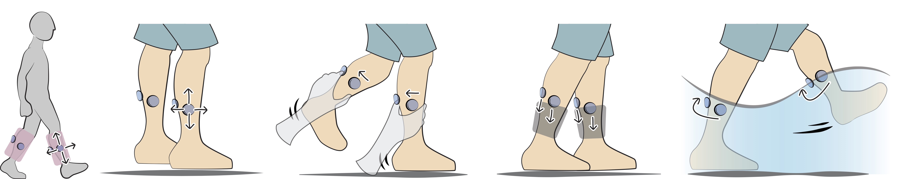

Gaiters
Exploring Skin Stretch Feedback on the Legs for Enhancing Virtual Reality Experiences.
How I participated:
 My role was to design the illustrations, create/render the prototype, design/conduct user studies and write papers. I designed the skin stretch modules and integrated them with splnts. With the prototype, I then recruited participants to collect data and feedbacks, analyzed the results and came up with applications with my team. My team members include computer scientists and electrical engineers.
My role was to design the illustrations, create/render the prototype, design/conduct user studies and write papers. I designed the skin stretch modules and integrated them with splnts. With the prototype, I then recruited participants to collect data and feedbacks, analyzed the results and came up with applications with my team. My team members include computer scientists and electrical engineers.
Interaction in virtual reality usually comes with body movement. In this project, we integrated skin-stretch modules with splint, then explored the JND(just noticeable difference) value on human calves. We also evaluated the agreement under different stretches and actions, then created 2 applications to demonstrate that VR interaction can be enhanced with skin stretch on calves.
Timeline: 4 monthsWe propose generating two-dimensional skin stretch feedback on the user's legs.
Our first two psychophysical studies examined the minimum changes in skin stretch distance and stretch angle that are perceivable by participants. We then designed and implemented Gaiters, a pair of ungrounded, leg-worn devices. Then, we conducted an exploratory study to understand participants’ experiences when coupling skin stretch patterns with various lower limb actions. The results indicate that rich haptic experiences can be created by our prototype. Finally, a user evaluation indicates that participants enjoyed the experiences when using Gaiters and considered skin stretch as compelling haptic feedback on the legs.
Skin stretch is useful cutaneous feedback to induce the perception of virtual textures and illusory forces and to deliver directional cues. This feedback has been applied to the head, body, and upper limbs to simulate rich physical properties in virtual reality (VR). However, how to expand the benefit of skin stretch feedback and apply it to the lower limbs, remains to be explored.
To demonstrate the novel interaction enabled by lateral skin stretch, we designed and implemented Gaiters, a pair of skin stretch devices worn on the user’s calf. One Gaiter consists of three skin stretch modules. When the user wears on Gaiters, the modules are in contact with the skin on the inner side, back, and outer side of the calf, respectively. To avoid discomfort for the user, we did not apply any module to the front side of calf, which is less muscular.

Prior works have shown that the combination of an action and a premade skin stretch profile can represent another perception. For example, generating a downward skin stretch when lifting up an object can induce the sensation of a weight. The perceptions evaluated in this study include Pulling Force, Weight, Rotational Force, and Friction. The figure shows the agreements of the four perceptions in the study.
The aim of this exploratory study is to test these action-coupled profiles and to understand how to utilize them to induce different types of perceptions.
We implemented two applications. A set of profiles were implemented based on our previous study results. We later conducted a user evaluation to understand user’s experiences while using Gaiters and to ensure that the skin stretch feedback generated by Gaiters is a valuable haptic addition. The results indicate that most of the participants regarded our system as a useful device to increase the realism and enjoymentof the applications.